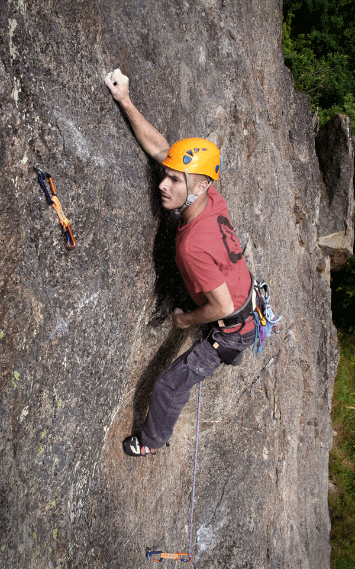
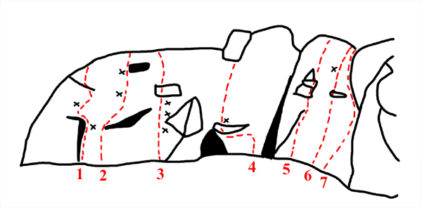
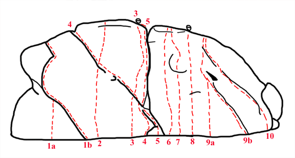
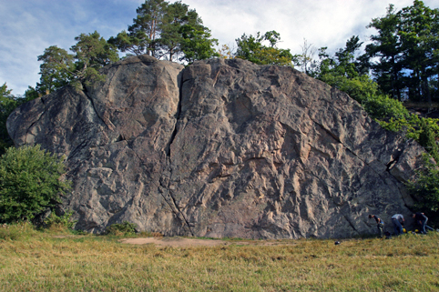
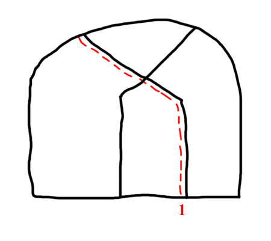

GPS: 56.195364318056235,15.034103393554688
Köpegårda är en sportklippa mellan Karlshamn och Ronneby. Klippan bjuder på ett 20-tal fina leder från grad 3 - 7. Vackert belägen med sydläge vid en åker gör att den torkar snabbt och kan klättras tidigt på våren. Klippan är svaig (förutom sektor A) och vass, vilket innebär mycket friktion, men greppen kan kännas lite gömda ibland. Köpegårda är en populär klippa, försök hålla låg profil med omtanke om familjerna som bor tvärs över åkern. I området finns även ett par stycken boulderblock. Minst fem st leder till är gjorda, utöver de som redovisas nedan: en travers på okänd höjd, 2 st lätta (~5) i högerkanten av huvudklippan, en på blocket i högerkanten och en i den vänstra sprickan i sektor C. Därutöver har det även gjorts några boulders i sektor A.
Från Karlshamn
kör du österut mot Karlskrona, vid Åryd svänger du av från E22:an och tar sedan vänster under E22:an och sedan snabbt höger igen för att köra under E22:an igen. Efter ca 1 km kommer en skylt åt höger "Köpegårda", efter 1 km på den vägen ser du klippan på vänster sida. fortsätt köra en liten bit tills det viker av en grusväg in mot klippan, parkera här och gå sedan sista biten.
Obs
Gena inte över åkern! Gå runt åkern utmed kanten.
Detta är den bortersta delen av väggen, på vänster sida om huvudväggen. Insteget till de lätta lederna till höger kan vara lite bökigt att nå.
Detta är huvudväggen, det första du ser av Köpegårda.
 Denna lilla vägg ligger inne bland träden innan huvudväggen
Kategori:sport
Kategori:Blekinge
Copyright (C) Permission is granted to copy, distribute and/or modify this document under the terms of the GNU Free Documentation License, Version 1.3